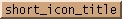
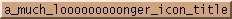
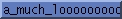

On Sat, Jan 05, 2002 at 09:49:37AM -0500, Dan Espen wrote:
> Tony Tung <tonytung_at_csua.berkeley.edu> writes:
> > On Sat, 5 Jan 2002, Mikhael Goikhman wrote:
> >
> > > If I understand you correctly, this is not related to pine or xterm.
> >
> > That is correct.
> >
> > > The width of the icon title in the collapsed state is always fixed, it is
> > > comparable with the width of the icon itself. When you point to the icon
> > > picture or title, the title is expanded fully if needed.
> >
> > That is interesting. On my setup, the width of the icon title in the
> > collapsed state is not fixed. It is set to the minimum width necessary to
> > hold the text, and adjusted to hold new text when the mouse moves over it.
> > Even when the mouse leaves, the new width is retained.
> >
> > Could this be an option that I have set in my .fvwm2rc?
>
> I don't see anything in the code or man page that would do that.
> That doesn't mean it isn't there, I just don't see it.
>
> Just to check, I just did:
>
> xterm -name 12345678901234567890 -iconic
>
> which gave me:
[snip]
> I also had it change icon names while it was iconified and it kept the
> narrow icon title.
>
> Maybe you have a patched fvwm?
No, he's right. Try this:
Style rxvt Icon missing_icon.xpm
Style rxvt IconTitle
Style rxvt SloppyFocus
(with an icon file that does not exist). Now, create an rxvt and
run bash or zsh in it (may work with other shells too, but no
guarantees):
$ rxvt
Then in the shell in the rxvt:
$ echo "\[\e]1;short_icon_title\007"
This sets the icon title to "short_icon_title". Next, type
$ echo "\[\e]1;a_much_looooooooonger_icon_title\007"
but don't press return yet. Iconify the rxvt and move the pointer
over it to focus it. The icon title shows the complete text.
When you now hit return, the title expands to fit the new, longer
icon title, but when you move the pointer away from the icon, it
collapses to the size of the old icon title. To clarify this, I
attached three screenshots. It looks like the icon title width is
not updated while the title is expanded.
---
BTW, what is the right way to disable icons but show icon titles?
I found no other way than specifying an illegal pixmap file. If I
have a default icon, I see no proper way to disable pixmaps for
certain applications.
Bye
Dominik ^_^ ^_^
--
Dominik Vogt, dominik.vogt_at_gmx.de
Reply-To: dominik.vogt_at_gmx.de
--
Visit the official FVWM web page at <URL: http://www.fvwm.org/>.
To unsubscribe from the list, send "unsubscribe fvwm" in the body of a
message to majordomo_at_fvwm.org.
To report problems, send mail to fvwm-owner_at_fvwm.org.

(image/jpeg attachment: 1.jpg)

(image/jpeg attachment: 2.jpg)

(image/jpeg attachment: 3.jpg)
Received on Sat Jan 05 2002 - 19:00:14 GMT
{kind=link}
{kind=link}
{kind=link}